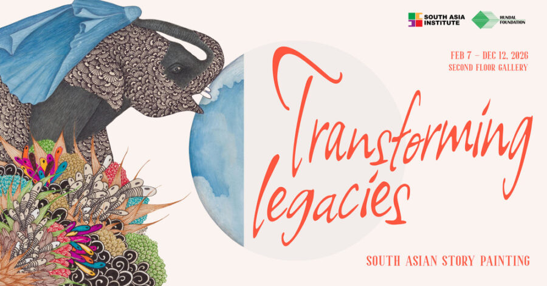

Transforming Legacies: South Asian Story Painting
“When we express our thoughts in words, the medium is not found easily. There must be a process of translation, which is often inexact…” ― Rabindranath Tagore, Stories from Tagore
All stories have their origins in the oral tradition. We gather in community and regale audiences with tales of love, loss, tragedy, and triumph in varying perspectives from the universal to the particular. These stories began to be told through the visual arts early on in ancient examples such as wall paintings found in the Ellora and Ajanta caves in Maharashtra, India, together spanning fourteen centuries of narrative tradition. The transition of South Asian storytelling into painting is also marked by an inexact process of translation, whereby the stories of old are renewed again for people in the modern world. Although steeped in tradition, the experiences of both the artist and viewer transcend the original text, retiring certain details and inserting new ones.
Transforming Legacies: South Asian Story Painting explores the fluidity of the great books of the traditions of the subcontinent and the diaspora into the painted medium from their inception to today. Modern and contemporary artists demonstrate the iterative potential of tried and true texts to overcome the challenges of systematic erasure, adapt with us, and bring people together. Through their adaptations of stories such as the Sanskrit epic The Ramayana and Heer Ranja, a famous Punjabi love story, among others, artists in this exhibition contend with important tensions between memory and loss, tradition and innovation, what is shared, and what is silenced. In addition to these well-known texts, several works in this exhibition highlight the interest of South Asian artists in Western stories, suggesting a reciprocal relationship between narratives and their artistic interpretation on a global scale